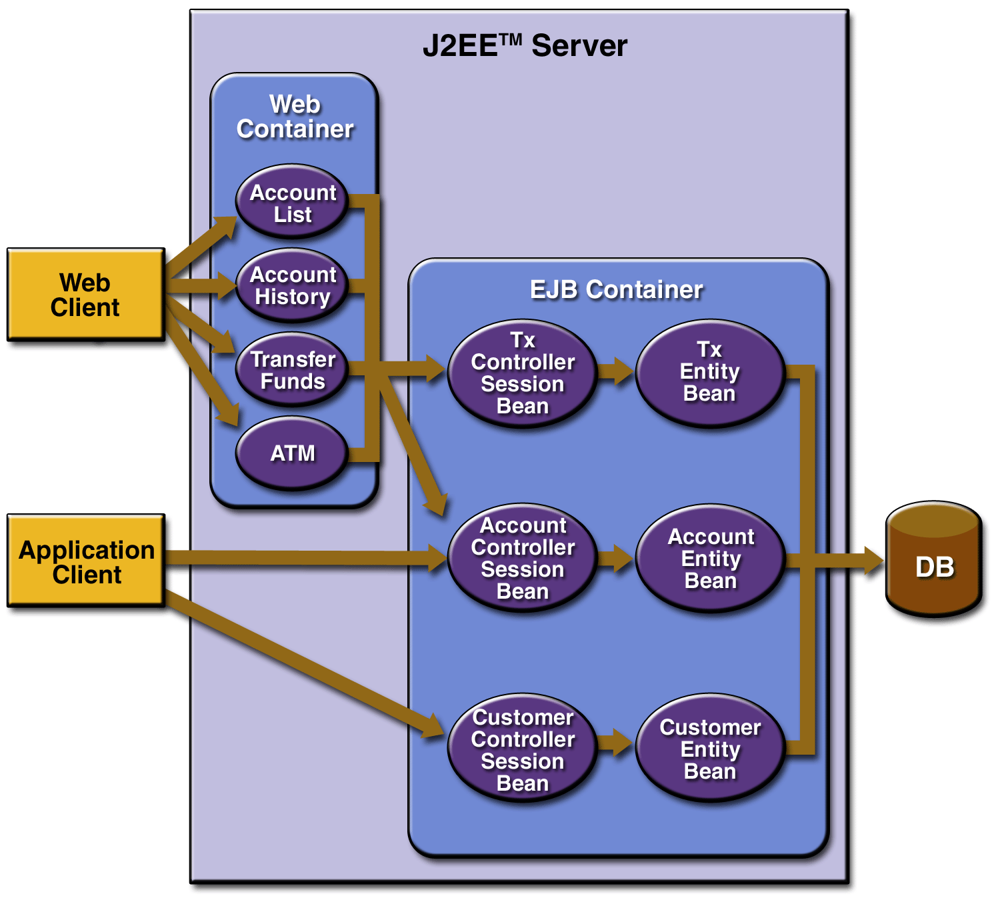
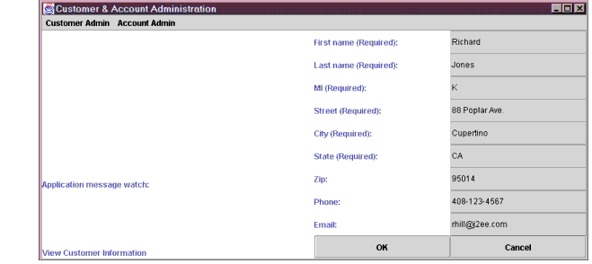
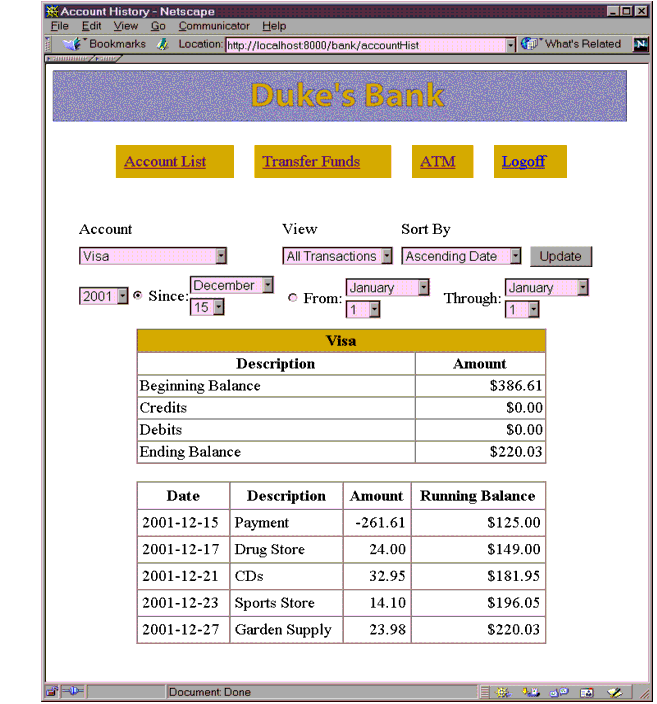

<!doctype html public "-//w3c//dtd html 4.0 transitional//en">
<html>
<head>
   <meta http-equiv="Content-Type" content="text/html; charset=iso-8859-1">
   <meta name="keywords" content="electronic commerce, ecommerce, ebusiness, e-business, e-commerce, enterprise software, net economy, Sun Microsystems, Sun Open Network Environment, Sun ONE, internet software">
   <meta name="description" content="Sun Microsystems, Inc., is delivering Sun ONE e-commerce software and enterprise solutions that enable companies to compete successfully in the Net Economy.">
   <meta name="LastUpdated" content="07/16/02 15:19:27">
   <meta name="GENERATOR" content="Mozilla/4.76 [en] (X11; U; SunOS 5.8 sun4u) [Netscape]">
   <title>Java(TM) Duke's Bank Sample Application:  Java(TM) Duke's Bank Sample Application</title>
</head>
<body text="#000000" bgcolor="#FFFFFF" link="#594FBF" vlink="#1005FB" alink="#333366">
<MAINCONTENT><NAVIGATIONCONTENT>
<table BORDER=0 CELLSPACING=4 WIDTH="100%" >
<tr>
<td VALIGN=TOP><a href="http://wwws.sun.com/software"></a></td>
</tr>

<tr>
<td ALIGN=RIGHT VALIGN=TOP BGCOLOR="#594FBF"><b><font face="Helvetica, Arial, sans-serif"><font color="#FFFFFF"><font size=-1>Java
<sup>TM</sup>
Duke's Bank Sample Application</font></font></font></b></td>
</tr>
</table>

<p></NAVIGATIONCONTENT><BOOKCONTENT>
<blockquote>&nbsp;
<p><a NAME="15913"></a><a NAME="Java TM Duke's Bank Sample Application"></a>Java
<sup><font size=-2>TM</font></sup>
Duke's Bank Sample Application
<br>&nbsp;
<p><a NAME="15115"></a><font face="Helvetica, Arial, sans-serif"><font size=-1>This
document describes how to utilize the Java <sup>TM</sup> Duke's Bank sample
application in conjunction with Sun ONE Application Server version 7.</font></font>
<p><a NAME="15119"></a><font face="Helvetica, Arial, sans-serif"><font size=-1>This
sample application document contains the following sections:</font></font>
<ul><a NAME="15123"></a>
<li>
<font face="Helvetica, Arial, sans-serif"><font size=-1><a href="index.html#14805">Overview</a></font></font></li>

<br><a NAME="15153"></a>
<li>
<font face="Helvetica, Arial, sans-serif"><font size=-1><a href="index.html#14862">Compiling,
Assembling and Deploying the Application</a></font></font></li>

<br><a NAME="15158"></a>
<li>
<font face="Helvetica, Arial, sans-serif"><font size=-1><a href="index.html#19746">Running
the Sample Application</a></font></font></li>

<br><a NAME="15139"></a>
<li>
<font face="Helvetica, Arial, sans-serif"><font size=-1><a href="index.html#14956">Configuring
for use with the Oracle Database</a></font></font></li>

<br><a NAME="15139"></a>
<li>
<font face="Helvetica, Arial, sans-serif"><font size=-1><a href="index.html#15009">Troubleshooting</a></font></font></li>

<br><a NAME="15139"></a>
<li>
<font face="Helvetica, Arial, sans-serif"><font size=-1><a href="#issues">Known
Issues</a></font></font></li>

<br>&nbsp;</ul>
<a NAME="14805"></a><a NAME="Overview"></a><font face="Helvetica, Arial, sans-serif"><font size=+1>Overview</font></font>
<hr SIZE="2" NOSHADE>
<br><a NAME="20444"></a><font face="Helvetica, Arial, sans-serif"><font size=-1>This
section describes the Duke's Bank application, an online banking application.
Duke's Bank has two clients: a J2EE application client used by administrators
to manage customers and accounts, and a Web client used by customers to
access account histories and perform transactions. The clients access the
customer, account, and transaction information maintained in a database
through enterprise beans. The Duke's Bank application demonstrates how
all the component technologies--enterprise beans, J2EE application clients,
and Web components--presented in this tutorial are put together to provide
a simple but functional application.</font></font>
<p><a NAME="20463"></a><font face="Helvetica, Arial, sans-serif"><font size=-1><a href="index.html#20475">Figure
1</a> provides a high level view of how the components interact.</font></font>
<p><a NAME="20474"></a>
<br>
<p><a NAME="20475"></a><ALIGN="LEFT"><b><font face="Helvetica, Arial, sans-serif"><font size=-1>Figure
1&nbsp;&nbsp;&nbsp; Duke's Bank Component Interaction</font></font></b>
<p><a NAME="20491"></a><font face="Helvetica, Arial, sans-serif"><font size=-1>For
additional information, please see Duke's Bank documentation available
on </font></font>java.sun.com with the <a href="http://java.sun.com/j2ee/tutorial/">J2EE
Tutorial.</a>
<br>&nbsp;
<p><a NAME="20504"></a><a NAME="Setting up the environment"></a><font face="Helvetica, Arial, sans-serif"><font size=+1>Setting
up the environment</font></font>
<p><a NAME="20506"></a><font face="Helvetica, Arial, sans-serif"><font size=-1>In
order to successfully deploy and run theDuke's Bank sample application,
several resources need to be setup with the Application Server. These resources
include:</font></font>
<ul><a NAME="20553"></a>
<li>
<font face="Helvetica, Arial, sans-serif"><font size=-1>JDBC resource</font></font></li>

<br><a NAME="20555"></a>
<li>
<font face="Helvetica, Arial, sans-serif"><font size=-1>JDBC connection
pool</font></font></li>

<br><a NAME="20558"></a>
<li>
<font face="Helvetica, Arial, sans-serif"><font size=-1>the main application.</font></font></li>
</ul>
<a NAME="20514"></a><a NAME="Setting up the Database"></a><b><font face="Helvetica, Arial, sans-serif">Setting
up the Database</font></b>
<p><a NAME="20582"></a><font face="Helvetica, Arial, sans-serif"><font size=-1>The
PointBase database server is automatically populated with all the necessary
data for the Duke's Bank application when it is started.</font></font>
<p><a NAME="20601"></a><font face="Helvetica, Arial, sans-serif"><font size=-1>Start
the PointBase database server by running one of the following scripts,
depending on your operating system:</font></font>
<ul><a NAME="20602"></a>
<li>
<font face="Helvetica, Arial, sans-serif"><font size=-1>Solaris</font></font></li>

<dl>
<dt>
<a NAME="20621"></a><font face="courier, couriernew, monospaced size"><font size=-1>&lt;install_root>/pointbase/server/StartServer.sh</font></font></dt>
</dl>
<a NAME="20517"></a>
<li>
<font face="Helvetica, Arial, sans-serif"><font size=-1>Windows 2000</font></font></li>

<dl>
<dt>
<a NAME="20615"></a><font face="courier, couriernew, monospaced size"><font size=-1>&lt;install_root>/pointbase/server/StartServer.bat</font></font></dt>
</dl>
</ul>
<a NAME="20518"></a><font face="Helvetica, Arial, sans-serif"><font size=-1>For
more information on using PointBase, please refer to the </font></font>Using
PointBase document.
<p><a NAME="20520"></a><font size=-1><font face="Helvetica, Arial, sans-serif">If
you prefer to re-create the database from scratch, you can use the sql
files in </font><font face="courier, couriernew, monospaced size">src/sql</font><font face="Helvetica, Arial, sans-serif">
to manually create schema and data in your PointBase server.</font></font>
<br>&nbsp;
<br>&nbsp;
<p><a NAME="14862"></a><a NAME="Compiling, Assembling and Deploying the Application"></a><font face="Helvetica, Arial, sans-serif"><font size=+1>Compiling,
Assembling and Deploying the Application</font></font>
<hr SIZE="2" NOSHADE>
<br><a NAME="14865"></a><font face="Helvetica, Arial, sans-serif"><font size=-1>This
section contains instructions to build and assemble the Duke's Bank sample
application.</font></font>
<ol type="1"><a NAME="20652"></a>
<li value="1">
<font size=-1><font face="Helvetica, Arial, sans-serif">Set </font><font face="courier, couriernew, monospaced size">AS_HOME</font><font face="Helvetica, Arial, sans-serif">
environment variable. For example:</font></font></li>

<dl>
<dt>
<a NAME="20663"></a><font size=-1><font face="Helvetica, Arial, sans-serif">For
Solaris, do </font><font face="courier, couriernew, monospaced size">setenv
AS_HOME &lt;install_root> and setenv PATH ${AS_HOME}/bin:${PATH}</font></font></dt>

<dt>
<a NAME="20671"></a><font face="Helvetica, Arial, sans-serif"><font size=-1>For
Windows 2000, do set AS_HOME=&lt;install_root></font></font></dt>

<dt>
<a NAME="20690"></a><font face="Helvetica, Arial, sans-serif"><font size=-1>This
is needed to set up the right classpath for compiling the application.
Be sure you set this variable from the shell where you plan to compile
the application.</font></font></dt>
</dl>
<a NAME="20650"></a>
<li value="2">
<font face="Helvetica, Arial, sans-serif"><font size=-1>Compile and Deploy
the application. For example:</font></font></li>

<dl>
<dt>
<a NAME="19371"></a><font size=-1><font face="Helvetica, Arial, sans-serif">Execute
the command </font><font face="courier, couriernew, monospaced size">asant
all </font><font face="Helvetica, Arial, sans-serif">under </font><font face="courier, couriernew, monospaced size">&lt;install_root>/samples/dukesbank/src</font></font></dt>

<dt>
<a NAME="20717"></a><font size=-1><font face="Helvetica, Arial, sans-serif">This
will compile all sources, assemble the module and deploy the application.&nbsp;
The command asant all compiles all the sources, assembles the module and
deploys the application, jdbc resource and jdbc connection pool.&nbsp;
To deploy again, type </font><font face="courier, couriernew, monospaced size">asant
undeploy </font><font face="Helvetica, Arial, sans-serif">at the command
line to undeploy the application, jdbc resource and jdbc connection pool
followed by </font><font face="courier, couriernew, monospaced size">asant
all.</font></font></dt>
</dl>
<a NAME="14889"></a><font face="Helvetica, Arial, sans-serif"><font size=-1>And
then restart the server instance.</font></font>
<li value="3">
<font face="Helvetica, Arial, sans-serif"><font size=-1>Clean the application
project area (optional).</font></font></li>

<dl>
<dt>
<a NAME="19426"></a><font size=-1><font face="Helvetica, Arial, sans-serif">Execute
the command </font><font face="courier, couriernew, monospaced size">asant
clean</font><font face="Helvetica, Arial, sans-serif"> to remove all files
generated in <a href="index.html#20650">Step 2</a>.</font></font></dt>
</dl>
<a NAME="20745"></a>
<li value="4">
<font face="Helvetica, Arial, sans-serif"><font size=-1>Generate javadocs
(optional). For example:</font></font></li>

<dl>
<dt>
<a NAME="20755"></a><font size=-1><font face="Helvetica, Arial, sans-serif">Execute
the command </font><font face="courier, couriernew, monospaced size">asant
javadocs</font><font face="Helvetica, Arial, sans-serif"> under &lt;</font><font face="courier, couriernew, monospaced size">install_root>/samples/dukesbank/src</font></font></dt>

<dt>
<a NAME="19432"></a><font size=-1><font face="Helvetica, Arial, sans-serif">Javadocs
will be located under </font><font face="courier, couriernew, monospaced size">&lt;install_root>/samples/dukesbank/javadocs</font></font></dt>
</dl>
<a NAME="20769"></a>
<li value="5">
<font face="Helvetica, Arial, sans-serif"><font size=-1>Verify Deployment
(optional).</font></font></li>

<dl>
<dt>
<a NAME="20778"></a><font face="Helvetica, Arial, sans-serif"><font size=-1>You
may use the Sun ONE Application Server Administration Tool to verify that
the application has been registered. Otherwise, proceed directly to <a href="index.html#19746">Running
the Sample Application</a>.</font></font></dt>

<dt>
<a NAME="20823"></a><font size=-1><font face="Helvetica, Arial, sans-serif">To
verify the registration of the application, execute </font><font face="courier, couriernew, monospaced size">asadmin
list-component</font><font face="Helvetica, Arial, sans-serif"> to look
at applications deployed with a server instance. For example:</font></font></dt>

<dt>
<a NAME="20824"></a><font face="courier, couriernew, monospaced size"><font size=-1>&lt;install_root>/bin/asadmin
list-components -u &lt;username> -w &lt;password> -H &lt;host> -p &lt;port>
&lt;server instance name></font></font></dt>

<dt>
<a NAME="20776"></a><font face="Helvetica, Arial, sans-serif"><font size=-1>You
will see the Duke's Bank Application listed.</font></font></dt>
</dl>
</ol>
<a NAME="19746"></a><a NAME="Running the Sample Application"></a><font face="Helvetica, Arial, sans-serif"><font size=+1>Running
the Sample Application</font></font>
<hr SIZE="2" NOSHADE>
<br><a NAME="20893"></a><font face="Helvetica, Arial, sans-serif"><font size=-1>In
this section, you will learn how to run the Duke's Bank sample application.
In order to run the application, you must first do the following:</font></font>
<ul><a NAME="20894"></a>
<li>
<font face="Helvetica, Arial, sans-serif"><font size=-1>Deploy the application</font></font></li>

<br><a NAME="20895"></a>
<li>
<font face="Helvetica, Arial, sans-serif"><font size=-1>Start your PointBase
database server</font></font></li>

<br><a NAME="20896"></a></ul>
<a NAME="20913"></a><a NAME="Running the J2EE Application Client"></a><font face="Helvetica, Arial, sans-serif"><font size=+1>Running
the J2EE Application Client</font></font>
<p><a NAME="20915"></a><font face="Helvetica, Arial, sans-serif"><font size=-1>To
run the J2EE application client, do the following:</font></font>
<ol type="1"><a NAME="20917"></a>
<li value="1">
<font size=-1><font face="Helvetica, Arial, sans-serif">In a terminal window,
go to </font><font face="courier, couriernew, monospaced size">/dukesbank/src/jar</font><font face="Helvetica, Arial, sans-serif">.</font></font></li>

<br><a NAME="20919"></a>
<li value="2">
<font face="Helvetica, Arial, sans-serif"><font size=-1>Set the APPCPATH
environment variable to</font></font></li>

<div value="2"><font face="Helvetica, Arial, sans-serif"><font size=-1>&lt;appserver-install-dir>/domains/domain1/&lt;instance>/applications/j2ee-apps/DukesBankApp_*/DukesBankAppClient.jar</font></font></div>
<a NAME="20921"></a>
<li>
<font size=-1><font face="Helvetica, Arial, sans-serif">Edit the file </font><font face="Courier New,Courier">&lt;appserver-install-dir>/domains/domain1/&lt;instance>/config/sun_acc.xml</font>,
<font face="Helvetica, Arial, sans-serif">modify
it to have value</font><font face="Courier New,Courier">&lt;client-credential
user-name="admin" password="j2ee"/></font>.&nbsp;</font><a NAME="20925"></a></li>

<li>
<font face="Helvetica, Arial, sans-serif"><font size=-1>To run the English
version of the client, execute the following command:</font></font></li>

<dl><font face="Courier New,Courier"><font size=-1>&lt;appserver-install-dir>/bin/appclient
-client</font></font>
<br><font face="Courier New,Courier"><font size=-1>&lt;appserver-install-dir>/domains/domain1/&lt;instance>/applications/j2ee-apps/DukesBankApp_*/DukesBankAppClient.jar</font></font>
<br><font face="Courier New,Courier"><font size=-1>-name BankAdmin -xml&nbsp;
&lt;appserver-install-dir>/domains/domain1/&lt;instance>/config/sun-acc.xml</font></font></dl>
</ol>
<a NAME="20404"></a><font face="Helvetica, Arial, sans-serif"><font size=-1>You
should see the application displayed as shown in <a href="index.html#20907">Figure
2</a>.</font></font>
<p><a NAME="20972"></a>
<br>
<p><a NAME="20907"></a><ALIGN="LEFT"><b><font face="Helvetica, Arial, sans-serif"><font size=-1>Figure
2&nbsp;&nbsp;&nbsp; English Version of Client running</font></font></b>
<br>&nbsp;
<p><a NAME="21008"></a><a NAME="Running the Web Client"></a><font face="Helvetica, Arial, sans-serif"><font size=+1>Running
the Web Client</font></font>
<p><a NAME="21010"></a><font face="Helvetica, Arial, sans-serif"><font size=-1>To
run the Web client, do the following:</font></font>
<ol type="1"><a NAME="21012"></a>
<li value="1">
<font size=-1><font face="Helvetica, Arial, sans-serif">From your web brpwser,
open the bank URL. For example: </font><font face="courier, couriernew, monospaced size">http://&lt;server>:&lt;port>/bank/main</font><font face="Helvetica, Arial, sans-serif">,
in a Web browser.</font></font></li>

<dl>
<dt>
<a NAME="21060"></a><font size=-1><font face="Helvetica, Arial, sans-serif">If
your J2EE server is running on the same host as your Web browser, replace
</font><font face="courier, couriernew, monospaced size">&lt;host></font><font face="Helvetica, Arial, sans-serif">
with localhost.</font></font></dt>
</dl>
<a NAME="21015"></a>
<li value="2">
<font face="Helvetica, Arial, sans-serif"><font size=-1>The application
will display the login page.</font></font></li>

<dl>
<dt>
<a NAME="21071"></a><font size=-1><font face="Helvetica, Arial, sans-serif">Enter
</font><b><font face="courier, couriernew, monospaced size">200</font></b><font face="Helvetica, Arial, sans-serif">
for the customer ID and </font><b><font face="courier, couriernew, monospaced size">j2ee</font></b><font face="Helvetica, Arial, sans-serif">
for the password.</font></font></dt>
</dl>
<a NAME="21079"></a>
<li value="3">
<font face="Helvetica, Arial, sans-serif"><font size=-1>Click submit.</font></font></li>

<br><a NAME="21018"></a>
<li value="4">
<font face="Helvetica, Arial, sans-serif"><font size=-1>Select an application
function: Account List, Transfer Funds, ATM, or Logoff.</font></font></li>

<dl>
<dt>
<a NAME="21019"></a><font face="Helvetica, Arial, sans-serif"><font size=-1>Once
you have a list of accounts, you can get an account history by selecting
an account link.</font></font></dt>
</dl>
</ol>
<a NAME="20909"></a><font face="Helvetica, Arial, sans-serif"><font size=-1>If
you select Account List, you will see the screen shown in the <a href="index.html#20910">Figure
3</a>.</font></font>
<p><a NAME="21100"></a>
<br>
<p><a NAME="20910"></a><ALIGN="LEFT"><b><font face="Helvetica, Arial, sans-serif"><font size=-1>Figure
3&nbsp;&nbsp;&nbsp; Account List Screen</font></font></b>
<p><a NAME="20911"></a>
<br>
<hr SIZE="1">
<table BORDER=0 CELLPADDING=5 WIDTH="75%" >
<tr>
<td VALIGN=TOP><a NAME="21123"></a><b><font face="Helvetica, Arial, sans-serif"><font size=-1>Note</font></font></b></td>

<td VALIGN=TOP><a NAME="21127"></a><font face="Helvetica, Arial, sans-serif"><font size=-1>The
first time you select a new page, particularly a complicated page like
an account history, it takes some time to display because the J2EE server
must translate the page into a servlet class and compile and load the class.&nbsp;</font></font></td>
</tr>
</table>

<hr SIZE="1">
<br>&nbsp;
<p><a NAME="14956"></a><a NAME="configdb"></a><font face="Arial, Helvetica, sans-serif"><font size=+1>Configuring
for use with the Oracle Database</font></font>
<hr size="2" NOSHADE>
<p><font face="Arial, Helvetica, sans-serif"><font size=-1>The product
application requires the following database setup prior to running:</font></font>
<ol><b><font face="Arial, Helvetica, sans-serif"><font size=-1>Ensure Database
Requirements are Met</font></font></b>
<p><font face="Arial, Helvetica, sans-serif"><font size=-1>See the Sun
One Application Server Release Notes for database version requirements.
The Product sample includes schema script for Oracle.</font></font>
<p><b><font face="Arial, Helvetica, sans-serif"><font size=-1>Create an
RDBMS User</font></font></b>
<ul><font face="Arial, Helvetica, sans-serif"><font size=-1>cd &lt;install_root>/samples/docs</font></font>
<p><font face="Arial, Helvetica, sans-serif"><font size=-1>sqlplus to oracle
as system user and create a user called dukesbank</font></font>
<p><font face="Arial, Helvetica, sans-serif"><font size=-1>SQL> @cr_ora_user.sql</font></font>
<p><font face="Arial, Helvetica, sans-serif"><font size=-1>exit sqlplus</font></font></ul>
<b><font face="Arial, Helvetica, sans-serif"><font size=-1>Create and Populate
the Product RDBMS Tables</font></font></b>
<ul><font face="Arial, Helvetica, sans-serif"><font size=-1>cd &lt;install_root>/samples/dukesbank/src/sql</font></font>
<p><font face="Arial, Helvetica, sans-serif"><font size=-1>sqlplus to oracle
as dukesbank user</font></font>
<p><font face="Arial, Helvetica, sans-serif"><font size=-1>SQL> @dukesbank-ora.sql;</font></font>
<p><font face="Arial, Helvetica, sans-serif"><font size=-1>exit sqlplus</font></font></ul>
<b><font face="Arial, Helvetica, sans-serif"><font size=-1>Register JDBC
Driver</font></font></b>
<br><font face="Arial, Helvetica, sans-serif"><font size=-1>Make sure that
JDBC driver zip/jar files are in classpath-suffix attribute of java-config
element in server.xml of the instance running this product application.
You may like to edit this file if necessary. Please make sure that the
server.xml is also copied to backup directory.</font></font>
<p><b><font face="Arial, Helvetica, sans-serif"><font size=-1>Create a
new Oracle JDBC Connection Pool</font></font></b>
<br><font face="Helvetica, Arial, sans-serif"><font size=-1>If you have
followed the instructions for Compiling, Assembling and Deploying the Application
against the PointBase server then:</font></font>
<dl>&nbsp;</dl>
<font size=-1><font face="Helvetica, Arial, sans-serif">Change to the directory
</font><font face="courier, couriernew, monospaced size">&lt;install_root>/samples/dukesbank/src</font></font>
<br><font size=-1><font face="Helvetica, Arial, sans-serif">Execute the
command </font><font face="courier, couriernew, monospaced size">asant
delete-jdbc-resource</font></font>
<br><font size=-1><font face="Helvetica, Arial, sans-serif">Execute the
command </font><font face="courier, couriernew, monospaced size">asant
delete-jdbc-connection-pool</font></font>
<br><font size=-1><font face="Helvetica, Arial, sans-serif">Execute the
command </font><font face="courier, couriernew, monospaced size">asant
deploy-ora -Ddb.host=&lt;host> -Ddb.port=&lt;port> -Ddb.sid=&lt;sid></font></font>
<br><font face="Arial, Helvetica, sans-serif"><font size=-1>And then restart
the server instance.</font></font>
<p><font face="Arial, Helvetica, sans-serif"><font size=-1>If you have
not followed the instructions for Compiling, Assembling and Deploying the
Application against the PointBase server:</font></font>
<p><font size=-1><font face="Helvetica, Arial, sans-serif">Change to the
directory </font><font face="courier, couriernew, monospaced size">&lt;install_root>/samples/dukesbank/src</font></font>
<br><font size=-1><font face="Helvetica, Arial, sans-serif">Execute the
command </font><font face="courier, couriernew, monospaced size">asant
all</font></font>
<br><font size=-1><font face="Helvetica, Arial, sans-serif">Execute the
command </font><font face="courier, couriernew, monospaced size">asant
delete-jdbc-resource</font></font>
<br><font size=-1><font face="Helvetica, Arial, sans-serif">Execute the
command </font><font face="courier, couriernew, monospaced size">asant
delete-jdbc-connection-pool</font></font>
<br><font size=-1><font face="Helvetica, Arial, sans-serif">Execute the
command </font><font face="courier, couriernew, monospaced size">asant
deploy-ora -Ddb.host=&lt;host> -Ddb.port=&lt;port> -Ddb.sid=&lt;sid></font></font>
<br><font face="Arial, Helvetica, sans-serif"><font size=-1>And then restart
the server instance.</font></font>
<p><b><font face="Arial, Helvetica, sans-serif"><font size=-1>Rerun the
Sample Application</font></font></b>
<br><font face="Helvetica, Arial, sans-serif"><font size=-1>You may now
run the application again using the steps under Running the J2EE Application
Client and Running the Web Client in the Running the Sample Application
section.</font></font></ol>
<a NAME="15009"></a><a NAME="Troubleshooting"></a><font face="Helvetica, Arial, sans-serif"><font size=+1>Troubleshooting</font></font>
<hr SIZE="2" NOSHADE>
<ul><a NAME="21140"></a>
<li>
<font size=-1><font face="Helvetica, Arial, sans-serif">If you encounter
problems when running the application, review the log files at </font><font face="courier, couriernew, monospaced size">&lt;install-root>/domains/&lt;domain-instance>/&lt;server-instance>/logs/server.log</font><font face="Helvetica, Arial, sans-serif">
to learn what exactly went wrong.</font></font></li>

<br><a NAME="21142"></a>
<li>
<font size=-1><font face="Helvetica, Arial, sans-serif">If you make changes
to the application, you can use the </font><font face="courier, couriernew, monospaced size">build.xml</font><font face="Helvetica, Arial, sans-serif">
in that specific module to rebuild the ear files. Your changes will be
effective after you redeploy the ear file.</font></font></li>

<br><a NAME="21142"></a>
<li>
<font face="Helvetica, Arial, sans-serif"><font size=-1>If you receive
an error while logging into the Web client as user 200 and password j2ee,
please make sure the keyfile is updated appropriately through the asant
all call. Also please make sure that the PointBase database server is up
and running, and the jdbc resource and jdbc connection pool is properly
deployed in the Application Server.</font></font></li>

<br><a NAME="21142"></a>
<li>
<font face="Helvetica, Arial, sans-serif"><font size=-1>If you receive
an error that the jdbc resource or jdbc connection pool already exists,
type "asant undeploy" at the command line before typing "asant all" again.</font></font></li>

<br><a NAME="21140"></a>
<li>
<font face="Helvetica, Arial, sans-serif"><font size=-1>If you would like
to run the command asant all at the command line after Configuring for
use with the Oracle Database,&nbsp; edit the db.host, db.port, and db.sid
and replace the create-jdbc-connection-pool with deploy-ora for the target
deploy_jdbc_resource.</font></font></li>

<br>&nbsp;</ul>
<a NAME="issues"></a><a NAME="Troubleshooting"></a><font face="Helvetica, Arial, sans-serif"><font size=+1>Known
Issues</font></font>
<hr SIZE="2" NOSHADE>
<ul><a NAME="21140"></a>
<li>
<font face="Helvetica, Arial, sans-serif"><font size=-1>If you Create a
new user using the Appclient Admin Screen, you need to Generate the keyfile
entry for the newly create user.&nbsp; For example, to genetrate the keyfile
entry for a user 200, group Customer and password j2ee run the command:</font></font></li>

<ul><font face="courier, couriernew, monospaced size"><font size=-1>asadmin
create-file-user --user &lt;admin> --password &lt;adminuser> --host &lt;host>
--port &lt;port> --userpassword j2ee --groups Customer 200</font></font>
<p><font face="courier, couriernew, monospaced size"><font size=-1>asadmin
reconfig --user &lt;admin> --password &lt;adminuser> --host &lt;host> --port
&lt;port> &lt;server> --discardmanualchanges=true</font></font>
<p><font face="courier, couriernew, monospaced size"><font size=-1>And
restart the server instance.</font></font></ul>

<p><li>
<font face="Helvetica, Arial, sans-serif"><font size=-1>When logging in
If you see "CORBA.OBJECT_NOT_EXIST" exception, restart the instance.&nbsp;
This issue is being addressed currently.</font></font></li>
<p><li><font face="Helvetica, Arial, sans-serif"><font size=-1>The sample can not be deployed from the application server administration GUI, if <FONT FACE="courier, couriernew, monospaced size">Run verifier</FONT> or <FONT FACE="courier, couriernew, monospaced size">Precompile JSPs</FONT> option is selected. 
Solution is, try deploying the application without <FONT FACE="courier, couriernew, monospaced size">Run verifier</FONT> and <FONT FACE="courier, couriernew, monospaced size">Precompile JSPs</FONT>, or deploy using <FONT FACE="courier, couriernew, monospaced size">asant</FONT>.
<p><li>The sample can not be deployed using <FONT FACE="courier, couriernew, monospaced size">asadmin</FONT> with option <FONT FACE="courier, couriernew, monospaced size">--verify=true</FONT> or <FONT FACE="courier, couriernew, monospaced size">--precompilejsp=true</FONT>.
Solution is, try deploying the application without the option <FONT FACE="courier, couriernew, monospaced size">--verify=true</FONT> and <FONT FACE="courier, couriernew, monospaced size">--precompilejsp=true</FONT>, or deploy using <FONT FACE="courier, couriernew, monospaced size">asant</FONT>.
<p><li><font face="Helvetica, Arial, sans-serif"><font size=-1>The sample uses a jdbc resource by the name <FONT FACE="courier, couriernew, monospaced size">jdbc/Cloudscape</font>.
The name is misleading and the application works with PointBase by default 
and will work with Oracle by following necessary instructions provided in the doc.
</ul></FONT>
</ul>
</blockquote>
</BOOKCONTENT><FOOTERCONTENT>
<blockquote>&nbsp;
<br>
<hr NOSHADE SIZE="1"><!-- start copyright --><font face="Helvetica, Arial, sans-serif"><font size=-2>Copyright
&copy; 2002 <a href="http://sun.com">Sun Microsystems, Inc.</a> All rights
reserved.</font></font><!--  end copyright  --></blockquote>

<div align=right><font face="Helvetica, Arial, sans-serif"><font size=-2>Last
Updated <b>July 16, 2002</b></font></font>
<br></FOOTERCONTENT></MAINCONTENT></div>

</body>
</html>
